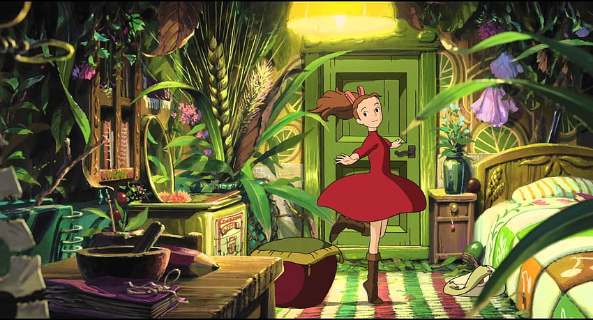

La storia è ambientata a Koganei, una città alla periferia ovest di Tokyo e si svolge nel 2010. Arrietty ha quasi 14 anni ma non è una ragazzina normale. È infatti un esserino alto non più di dieci centimetri e appartiene alla razza dei prendimprestito; vive con la sua famiglia, composta da sua madre Homily e dal padre Pod, sotto il pavimento di una grande casa di campagna, dove i "grandi" umani sono inconsapevoli della loro presenza. La famiglia di Arrietty si nutre degli scarti degli umani ed è solita "prendere in prestito" (per così dire) gli oggetti d'uso comune lasciati in giro o dimenticati, che quindi "spariscono" misteriosamente, per poi essere riutilizzati in modo creativo dai prendimprestito nella loro vita di tutti i giorni. La vita della ragazza cambia improvvisamente quando nella grande casa viene ad abitare Shō, un ragazzo della sua età che deve trascorrere un periodo di assoluto riposo prima di un'importante operazione al cuore a cui deve sottoporsi di lì a qualche giorno. Al suo arrivo nella vecchia casa dove la madre ha trascorso l'infanzia, Shō riesce a scorgere Arietty nel giardino mentre lei si nasconde dietro una pianta. Tra i due, dopo l'iniziale diffidenza, si fa strada la curiosità reciproca che diventa, poco a poco, un profondo legame che va al di là della semplice amicizia, nonostante le differenti dimensioni ed il divieto di farsi vedere dagli umani imposto ad Arrietty dai genitori. I due ragazzi si raccontano reciprocamente le loro storie e Shō si rende conto di avere purtroppo un destino comune ad Arrietty. Gli oltre 6 miliardi e mezzo di umani che vivono sulla Terra hanno ormai scacciato i prendimprestito, la razza a cui appartiene Arrietty, che è condannata all'estinzione: probabilmente la famiglia di Arrietty è l'ultima che ancora vive sulla Terra. Anche Shō sente vicino un triste destino: prostrato dagli anni di malattia, è convinto che non riuscirà a superare l'operazione al cuore a cui verrà sottoposto. I loro incontri furtivi non passano però inosservati: la signora Haru (la governante delle casa) scopre la presenza della famiglia dei prendimprestito, che si così vede costretta ad abbandonare la comoda casetta che si era ricavata sotto il pavimento della grande casa di campagna. Questo pone fine all'impossibile amicizia tra Shō ed Arrietty e i due ragazzi sono costretti a dirsi addio. Shō da questo breve incontro ha però ricavato una nuova volontà di vivere che forse potrebbe fargli superare l'operazione al cuore. Arrietty ha invece un'altra difficile sfida, trovare un nuovo modo di vivere lontano dalle comodità del progresso umano, ma più vicino alla natura, dove forse la sua razza potrà trovare una nuova forza per sopravvivere all'estinzione; così con la sua famiglia seguirà Spiller, un ragazzo selvaggio della sua specie, che qualche giorno prima aveva soccorso suo padre ferito alla gamba e che, goffamente, cerca di essere gentile con lei. I due ragazzi non si incontreranno mai più ma Shō porterà per sempre dentro di sé il ricordo della piccola Arrietty.